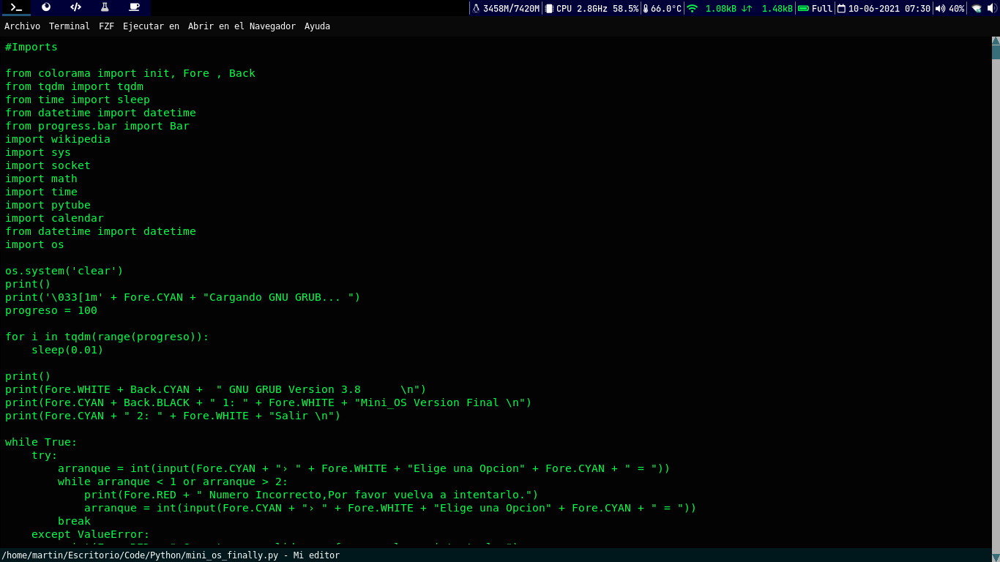

Code Editor
Code Editor es una herramienta para crear tus programas y escribir codigo.
Caracteristicas de Code Editor
Es Open Source.
Escrito con Tkinter en Python3.
Terminal Incluido(kitty).
Incluye Lanzador de paginas web.
Simple (No se recomienda usarlo para proyectos grandes).
Se configura editando el codigo fuente (puedes escribir lo que
quieras).
Screenshot

×

Compatibilidad
Code Editor solo esta disponible para Linux.
Configuracion
Lo que debes hacer es abrir el archivo "code_editor.pyw" y comenzar a editarlo.
cd Code-Editor
vim code_editor.pyw
Instalacion
git clone https://github.com/martinval9/Code-Editor.git
cd Code-Editor
python3 code_editor.pyw